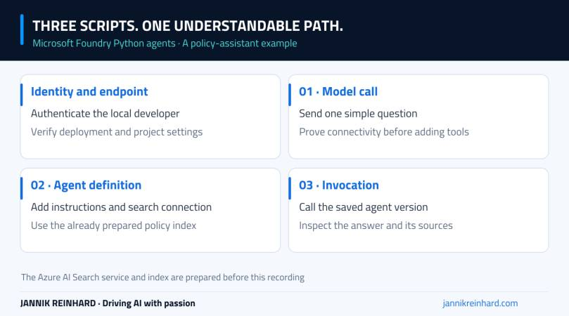
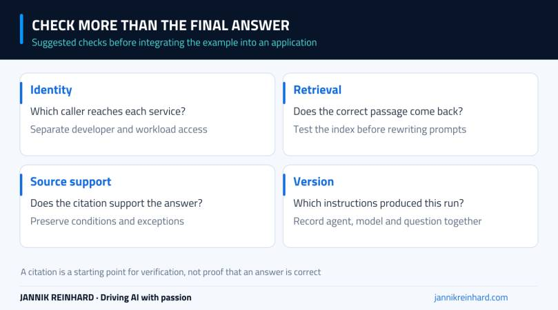

Microsoft Foundry Python agents become easier to understand when you separate three steps: call a model, create an agent, and run that agent against a real question. In this episode, I walk through those steps in VS Code using an IT policy assistant as the example.
The useful part is not getting another chatbot to answer “What is MFA?” It is moving from that simple connectivity check to an agent that can look up company policy and return sources. Watch the complete walkthrough below; the written notes explain the boundaries between the scripts and the checks I would make before using the same pattern in an application.
Related Python examples: You can find model calls, agents and Azure AI Search examples in my Microsoft Foundry examples repository on GitHub. This is a broader collection, not an exact copy of the three scripts in this video. Some agent examples use the classic Agent Service API, so follow the repository README for the matching SDK and setup.
Video language: German · Duration: 10:05 · Released 22 September 2026.
What I build in this episode
The example is a small helpdesk agent. It answers questions about fictitious Contoso IT policies, including whether a company laptop can be used privately. The source documents are already in an Azure AI Search index before the recording starts. This is not a search-service provisioning or document-ingestion tutorial.
I use three small scripts so each stage has one job. The first proves that the local application can authenticate and call the selected deployment. The second defines the agent and its search capability. The third invokes the saved agent and prints its response. If something breaks, that separation gives me a much smaller place to start looking.

Conceptual flow of the three-script example. The search index exists before the agent is created.
Start with one authenticated model call
At approximately 1:12 in the video, I start with the model call. In the portal, the deployment’s sample code helps locate the right endpoint. In VS Code, the example uses the OpenAI SDK with Azure Identity rather than embedding an API key in the script.
My first question is deliberately simple: explain MFA in no more than three sentences. There is no search tool and no company knowledge involved yet. I want to know whether the endpoint, deployment name and authentication work before I add another service.
Local authentication and application authentication are separate decisions. An interactive developer identity can be useful while learning. It is not a reason to run a production application with a developer’s account. For an Azure-hosted workload, I would review managed identity and the minimum required permissions for each service.
There are also timeouts and retry limits in the example. Keep retries bounded. A permission error will not become a successful request because the application repeats it twenty times, and repeated model calls can consume both time and money.
If the deployment itself is new to you, start with my Microsoft Foundry model deployment guide. A catalog model name, a deployment name and a project endpoint are related, but they are not interchangeable configuration values.
Add company knowledge through an agent
Around 4:02, the example moves to the project client and the agent definition. The agent receives a clear helpdesk role, instructions for short German answers, and access to the existing policy index through a configured search connection.
The recording uses a simple query configuration and retrieves three results. That is a starting point for this small example, not a universal recommendation for every retrieval workload. More results do not automatically mean better answers. Relevant passages, document structure and the question itself matter more than filling the context window.
A connection visible in the portal is only one piece of this setup. The identity that actually reaches Search must have the required data access. If retrieval fails, check the connection, index name and permissions before rewriting the agent’s entire instruction set.
I would also test one policy question directly against the index. If the right document cannot be found there, an agent cannot reliably repair that missing evidence with a clever prompt. Separate a retrieval problem from an answer-generation problem.
Save an agent version, then invoke that version
Changing the instructions and saving the agent creates a versioned configuration in the demonstrated workflow. That makes the next question important: which version does the calling script actually use?
At approximately 7:19, I invoke the agent and ask about private use of a company laptop. The terminal shows the answer and its sources. The example waits for the complete response; it does not demonstrate a streaming user interface.
For your own test, record the agent name, version, deployment, question and returned sources together. Otherwise it is surprisingly easy to compare two answers without noticing that different instructions or different knowledge were used.
A source reference is useful, but still needs checking. Open the cited passage. Does it support the answer, including exceptions and conditions? “The agent returned a citation” and “the answer is correct” are different checks.

The four checks I would complete before putting this example behind an application.
A small test set before adding more features
I would start with these four cases. They are suggested follow-up tests, not additional results claimed from the recording.
| Test question | What I would check |
|---|---|
| A question answered directly in a policy | The response cites the correct passage and preserves its conditions. |
| A question that is not covered | The agent admits the gap instead of inventing company policy. |
| An ambiguous request | It asks for the missing context or explains its assumption. |
| A question whose answer changed in a document | Retrieval uses the updated source rather than an old copy. |
Keep the first test set in the repository alongside the scripts. It does not have to be large to be useful. The important part is running the same questions after a change, instead of judging every version with a different friendly example.
What comes after the demo
This episode establishes the basic code path. It does not demonstrate document-level authorization, production deployment, a complete evaluation suite or an end-user application. Those are separate pieces of work.
Before a wider rollout, I would add explicit access boundaries for knowledge, review what gets recorded in traces, and measure failures as well as successful answers. A model that answers correctly once can still choose the wrong tool or miss the relevant passage on the next question.
For the current SDK pattern, use Microsoft’s Responses API agent quickstart. SDK versions and portal labels can change; compare the current documentation with the version installed in your environment rather than mixing examples from different API generations.
The next practical step is debugging an agent with tracing and evaluation. My takeaway from this episode is simple: get one small path working, make its sources visible, and keep the agent version identifiable. You can add complexity once you can explain that path.
Stay healthy, Cheers Jannik